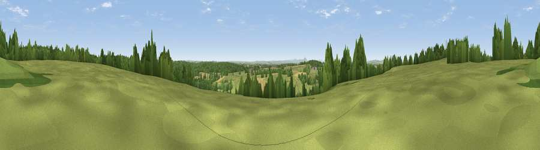

Viewpoint near Hales
#26624 in England · top 42% of its area beats it · near Hales · access?Where it is
The exact computed spot (SJ 73725 33025). Click the marker for map links.
Public access: no public right of way or access land is recorded at this exact spot — it may be on private land. Computed from Natural England's CRoW access layer and OpenStreetMap rights of way — not the legal definitive map. Always verify locally.
The view, rendered

A 360° render of this exact spot computed from the terrain model, tree cover and land cover — summer colours, afternoon light, calibrated against photographs of famous viewpoints. Real trees, hedges and buildings will differ in detail.
The panorama
Grey silhouette: terrain skyline in each direction (720 bearings, Earth curvature and refraction included). Dashed green: skyline with trees (+15 m) and buildings (+8 m) as obstacles. Blue strip: how far the ground is visible on each bearing.
Where the view opens
Wedge length = distance to the farthest visible ground on that bearing (vegetation-aware). Rings at 10, 25 and 50 km.
What fills the view
61% grassland · 27% woodland · 11% cropland ·
Angular shares of the visible panorama (visual magnitude), not map area. Landscape diversity 0.41 (0–1 Shannon).
Key numbers
More beautiful places nearby
The staircase of upgrades: each row has a higher view potential than everything closer. Driving times are estimates from straight-line distance, calibrated against real road routing — check an actual route before setting out.
| Place | Direction | Drive | Score |
|---|---|---|---|
| Viewpoint near Hales | W · 0 km | ~2 min | 49.1 |
| Viewpoint near Loggerheads | N · 4 km | ~9 min | 51.0 |
| Viewpoint near Aston | NNE · 8 km | ~16 min | 57.5 |
| Woore Hill | N · 9 km | ~18 min | 60.1 |
| Bar Hill | NNE · 11 km | ~21 min | 61.3 |
| Viewpoint near Madeley | NNE · 11 km | ~22 min | 66.7 |
| Kenstone Hill | WSW · 15 km | ~27 min | 74.0 |
| Viewpoint near Marchamley | WSW · 16 km | ~28 min | 77.5 |
52.89402, -2.39200 · source: screening · position refined by local search. Computed location — check access rights before visiting.